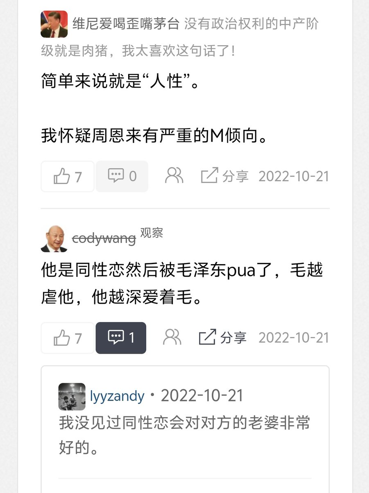
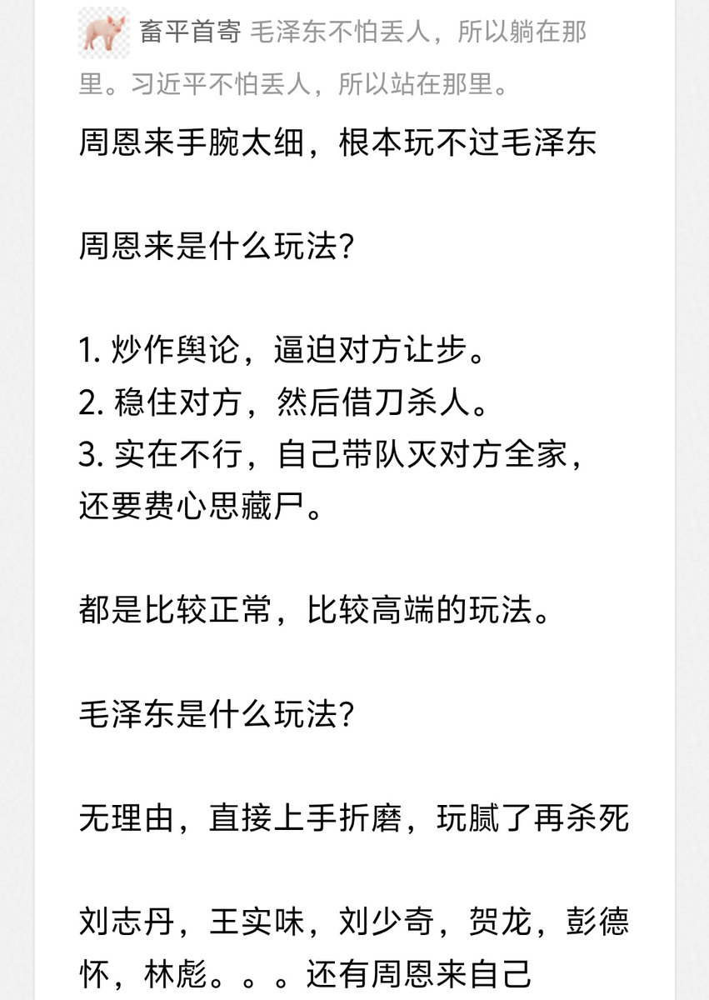
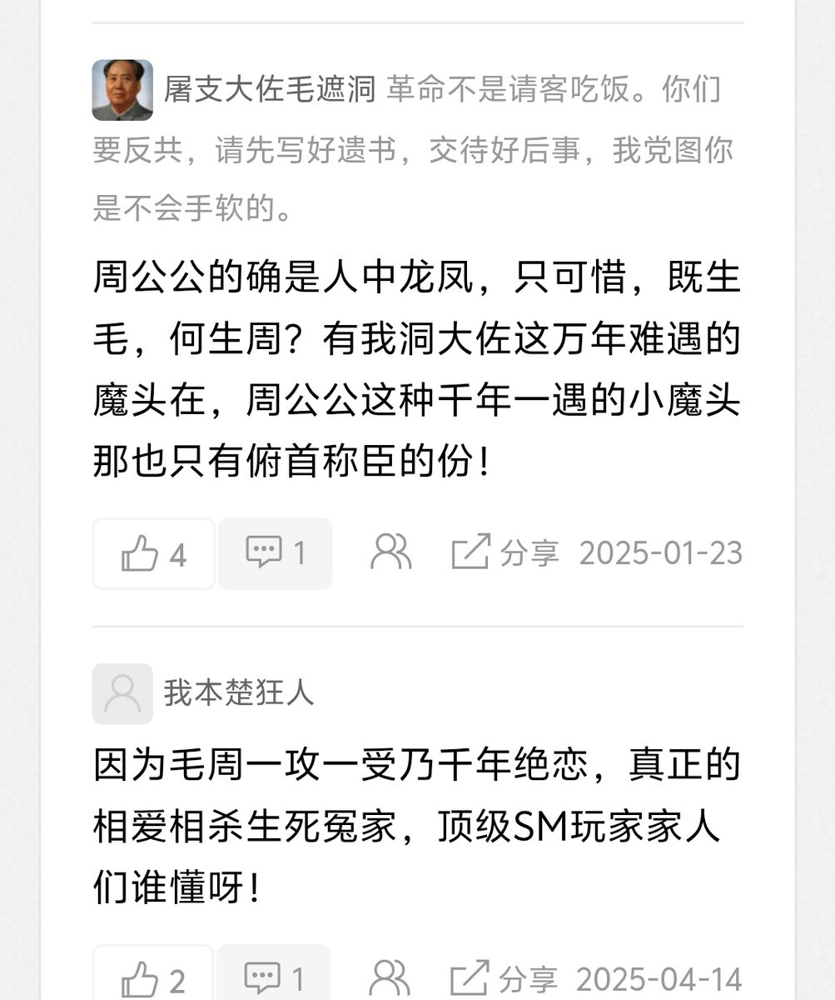

Warma广场
@Warma_Plaza
@ChanaWeins89377 <(。_。)>



Ender桓桓
@ChanaWeins89377
我猫粥启蒙是刚学会翻墙时候，看膜乎品葱里那些键政哥。
在加以晚周疯狂泥塑，彻底颠覆了我对毛周父母爱情的初印象，变成现在党内sm，在中国我们不叫主人叫主席这样的风格，，
以至于我舞的家产非常恶俗，这也是我挺害怕毛粉毛左的原因，不是说不害怕周粉的意思。。 https://t.co/V897ZWn2Tb